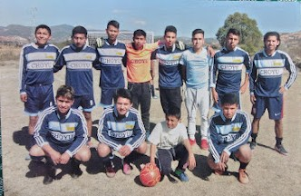
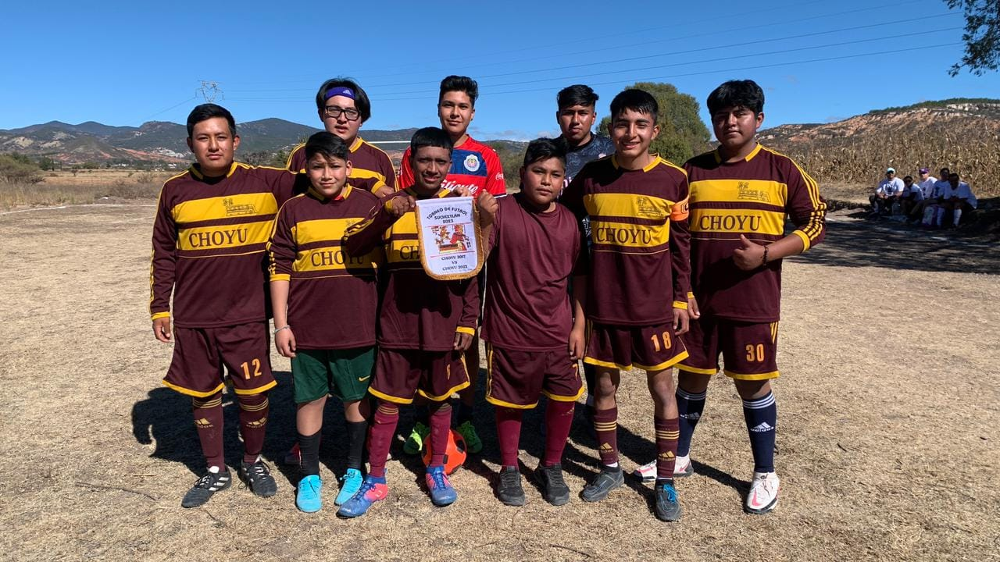
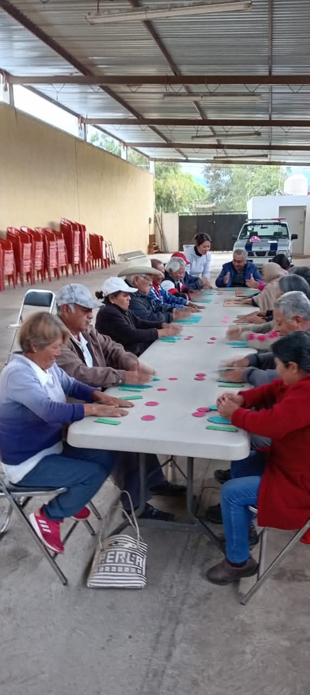

Segundo equipo de futbol

Festival del 10 de mayo

Celebracion San isidro Labrador

Celebracion San isidro Labrador

Celebracion San isidro Labrador

Celebracion San isidro Labrador

Bajada del Dulce Nombre de Jesus

Bajada del Dulce Nombre de Jesus

Bajada del Dulce Nombre de Jesus

Ejercicios adultos mayores
Canto Dulce Nombre
El Dulce Nombre es mi Señor
y yo le rezo con gran fervor,
este domingo le cantaré
porque este día más lo amaré.
...